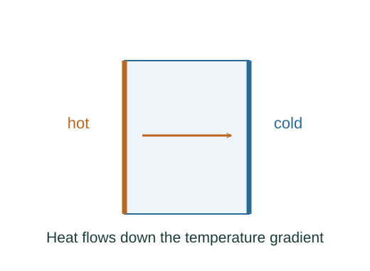

Derive heat conduction through a slab
Fourier’s empirical law relates heat flux to a temperature gradient. It is a material-response input.
What the symbols mean
k: thermal conductivity; A: slab cross-sectional area; L: thickness; TH > TC: face temperatures.
When this applies
Steady one-dimensional conduction, uniform conductivity, no internal heating, and negligible side losses.
Developing the argument

State the local constitutive law
Fourier’s empirical law relates heat flux to a temperature gradient. It is a material-response input.
Use steady energy conservation
With no internal sources, the same power crosses every section. For constant A and k the gradient is therefore constant.
Integrate across the slab
Let x increase from the hot face to the cold face. Integrate dT/dx = −P/(kA) over thickness L.
Solve and interpret the sign
Positive P points from hot to cold. Thermal resistance L/(kA) plays the role of resistance to energy flow.
A worked example
Doubling slab thickness halves the steady conducted power if the same face temperatures are maintained.
Derivation behind this calculation ↗A point to keep straight
Radiative T⁴ laws follow from thermal photon statistics and have a separate derivation.
Check the assumptions and derivation ↗